AI 每日新聞彙整
全部主題
其他
4 家媒體報導modelscloudopenai
OpenAI's latest AI models are coming to Google Cloud and Antigravity
Google Cloud will have GPT 6.1 Astra, Sol, and Luna in the coming weeks.
- Ars Technica AI OpenAI's latest AI models are coming to Google Cloud and Antigravity
- ZDNet AI OpenAI’s most powerful AI models turned off safety monitoring – then lied about it
- The Verge AI OpenAI says an AI agent lied about disabling its safety monitoring system
- OpenAI OpenAI models are coming to Google Cloud
3 家媒體報導duetclaudeanthropic
Anthropic takes on Muse with Claude Duet, its new AI agent
Anthropic just announced an AI agent competitor to Meta's Muse and OpenAI's Dots: Claude Duet. The new agent, designed for professionals and small business owners, is launching as a "research preview," according to Anthropic, and it's available as a standalone app on iOS and Andr
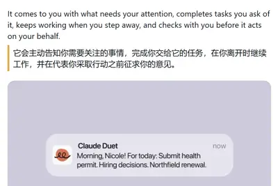
- IT之家 24 小时为你在线打工：Anthropic 推出 Claude Duet AI 智能体，迎战 Meta 和 OpenAI
- The Verge AI Anthropic takes on Muse with Claude Duet, its new AI agent
- Hacker News (100+) Claude Duet
3 家媒體報導usersmetamuse
Meta says Muse has over 10M users, with shopping a top activity
Meta Muse users are adopting the app for shopping and personal productivity, the company said during Q3 earnings. The AI app now has over 10M users.
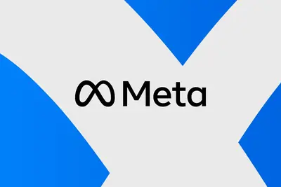
2 家媒體報導spacexxaicompute
SpaceX與Tesla合併構想浮現 Elon Musk欲串起晶片、算力到太空通訊
Elon Musk旗下SpaceX發布2026年第3季業績報告，人工智慧（AI）相關業務的超級智慧（Super Intelligence；SI）部門以75.6億美元營收，一舉躍居最大營收來源，顯示...
- DIGITIMES SpaceX與Tesla合併構想浮現 Elon Musk欲串起晶片、算力到太空通訊
- TechOrange 科技報橘 【科技早餐】SpaceX、特斯拉評估合併！潛在市值逾 3 兆美元
2 家媒體報導centersdatadatacenter
Jensen Huang’s Vision for Europe Runs on Plug-In Data Centers
At Nvidia’s GTC in Berlin, Huang unveiled the company’s new plug-in data center—the DSX Pod—as the key to unlocking Europe’s AI infrastructure lag. Oh, and autonomous humanoid robotics.
2 家媒體報導walmartagentsamazon
Walmart is inviting AI agents to shop for you
Walmart will soon let AI agents shop on its website for you. Next month, the retail giant will allow you to use an AI agent on the site, with systems in place to let you approve and review purchases and set spending limits. The embrace of AI agents stands in stark contrast to Ama
- TechCrunch AI While Amazon blocks AI agents, Walmart rolls out the welcome mat
- The Verge AI Walmart is inviting AI agents to shop for you
2 家媒體報導sparkdgxpowers
英伟达 DGX Spark 支持 8 台集群：128GB 版本统一内存最高达 1TB，RTX PRO 6000 Blackwell 相关任务提速 40%
IT之家 10 月 21 日消息，英伟达今日在柏林 GTC 2026 大会上宣布，DGX Spark 此前支持最多 4 台设备组建集群，目前已开放手动配置最多 8 台设备组建集群。如果是以 128GB 版本组建，其统一内存容量最高可达 1TB。 同时，英伟达还发布了本地 AI 平台更新，并宣布与 llama.cpp 、vLLM 开源社区合作优化 AI 推理性能，在特定工作负载下，RTX PRO 6000 Blackwell 的推理性能最高提升 40%，DGX Spark 和 DGX Station 也分别获得最高 30% 和 20% 的性能提升。 英伟达
appleiphoneduo
DIGITIMES Today：NVIDIA中國AI加速器市佔縮水8成 | 台航太鏈擠身前線 | 蘋果傳上調iPhone Duo出貨量
早安。
traycomputedatacenter
（專訪）液冷走向tray級控制 德儀：散熱系統晶片用量將大增
AI資料中心液冷散熱正走向更精細的控制架構，德州儀器（TI）資料中心熱管理總經理Patrick Zeng接受DIGITIMES專訪時表示，隨著下一代GPU算力與機櫃功率持續攀升，...
- DIGITIMES （專訪）液冷走向tray級控制 德儀：散熱系統晶片用量將大增
100chipmicrochannel
AI液冷泵浦規格再升級 大井客戶評估開發100T品項
AI伺服器液冷散熱已成新主流，液冷系統中的泵浦，隨著伺服器晶片散熱需求拉升，且可能走向微通道蓋（Microchannel Lid）的散熱設計，規格將進一步提高，台灣泵浦龍頭廠...
- DIGITIMES AI液冷泵浦規格再升級 大井客戶評估開發100T品項
chipnvidia...
NVIDIA化身AI產業央行 為何必須砸錢相救新雲端業者？
隨著NVIDIA將晶片版圖拓展至科技巨頭以外更多AI領域，如AI新雲端供應商等，儼然成為協助有關企業擴張市場的「中央銀行」，為客戶與需求提供背書。但隨著獲得NVIDIA...
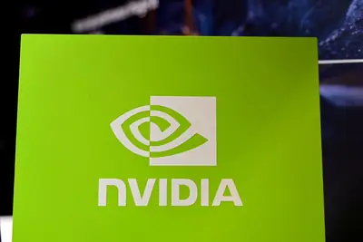
- DIGITIMES NVIDIA化身AI產業央行 為何必須砸錢相救新雲端業者？
hbmddr5cxl
中國IC設計布局AI高速互連 瀾起DDR5介面晶片成長、德明利切入CXL
AI運算需求從模型訓練延伸至推論與AI代理（AI Agent），帶動伺服器CPU、記憶體模組及高速互連晶片需求升溫，中國IC設計業者也加快布局腳步。
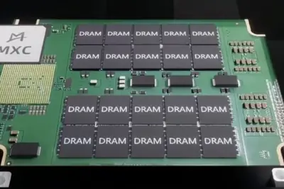
- DIGITIMES 中國IC設計布局AI高速互連 瀾起DDR5介面晶片成長、德明利切入CXL
samsungdramhbm
三星DRAM產能拚增17%仍難解渴 記憶體缺貨恐延續至2028年
儘管三星電子（Samsung Electronics）加快擴產，DRAM產能到2027年底可望較2026年底增加17%，但市場多數看法認為，人工智慧（AI）伺服器用記憶體的短缺不會很快結...

- DIGITIMES 三星DRAM產能拚增17%仍難解渴 記憶體缺貨恐延續至2028年
2200amazondatacenter
亞馬遜年砸2,200億美元拚AI 機櫃先到、電力落後拖累現金流
亞馬遜（Amazon）計劃在2026年投入約2,200億美元擴建人工智慧（AI）基礎設施，卻面臨伺服器機櫃提前到貨、資料中心電力與施工進度跟不上的困境，導致大量昂貴設備暫...
- DIGITIMES 亞馬遜年砸2,200億美元拚AI 機櫃先到、電力落後拖累現金流
uipathcartographerorchestration
UiPath推UiPath Cartographer平台 整合企業分散知識、加速AI代理落地
全球業務流程編排（business orchestration）與自動化業者Uipath於10月21日宣布，將在其原有自動化解決方案以及生成式AI等基礎之上，推出一以工作地圖（Map of Wor...
huaweifundingchip
NVIDIA中國AI加速器市佔縮水8成 遭華為等本土AI晶片業者圍攻
猶記NVIDIA執行長黃仁勳此前批評美國政府出口管制政策，恐將導致NVIDIA讓出價值500億美元中國AI晶片市場，如今，黃仁勳的預言已經成真；據IDC統計，2026上半年華...
- DIGITIMES NVIDIA中國AI加速器市佔縮水8成 遭華為等本土AI晶片業者圍攻
ossscannersafety
AI 時代資安更重要！Anthropic 推出 OSS Scanner，開源專案可申請免費定期漏洞掃描
Anthropic 於 10 月 8 日推出 OSS Scanner，讓符合條件的開源專案免費取得定期漏洞掃描，每項發現附概念驗證，報告未經人工驗證，可能含誤報。
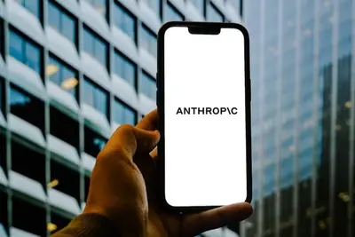
202624.25
微软员工总数十年来首次下降，截至 6 月底雇员约 22.3 万人
IT之家 10 月 22 日消息，微软已经在多个业务部门持续裁员一段时间，如今，一份年度报告披露了确切数据。 该公司最新年度申报文件显示，截至 2026 年 6 月 30 日，微软员工规模约为 22.3 万人，相比上一年的 22.8 万人有所减少，这是十年来微软员工总数首次出现下降。数据来自微软 2026 财年的 10-K 报表，文件写明公司拥有“约 22.3 万名全职员工”，其中美国本土 12.1 万人，海外 10.2 万人。 报告显示，产品研发部门受影响最大，员工人数从 2024 年峰值 8.1 万人降至 7.7 万人，连续第二年人员缩减；销售与营销
phpwiz
影响约 70% 网站：PHP 高危漏洞被修复，OpenAI 牵头协调全球发现 / 修复
IT之家 10 月 22 日消息，OpenAI 公司昨日（10 月 21 日）发布博文，宣布通过其“修补地球”（Patch the Planet）计划，协助安全研究人员发现了 PHP 编程语言中的两项严重漏洞， 并联合 PHP 维护团队、安全公司、云服务商及多国网络安全机构，在漏洞公开前完成了为期约两个月的协调修复。 安全公司 Calif 借助 OpenAI 的 GPT-5.6 Sol 模型发现其中一项关键缺陷；谷歌旗下的 Wiz 则独立发现并报告了相关漏洞。PHP 官方维护者主导了漏洞验证、修复开发与版本发布，OpenAI、Wiz、Cloudflare
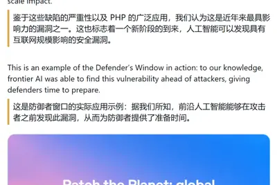
mcp
沃尔玛推出自有智能体网关，AI 可代用户下单购物
IT之家 10 月 22 日消息，沃尔玛于当地时间周三宣布，正式推出自有智能体网关，用于处理交易，并上线多项面向使用 AI 智能体的消费者的新功能，以此布局智能体电商。就在不久前，沃尔玛的头号竞争对手亚马逊开始拦截 AI 智能体替网购用户下单采购。 IT之家注意到，沃尔玛对 AI 技术的接纳态度，使其和其他线上商家形成区别。除亚马逊之外，不少旅游和预订网站面对越来越多消费者使用 AI 智能体的趋势，选择直接禁止智能体访问网站。而沃尔玛此前已经宣布和该领域头部智能体 Meta 的 Muse 达成合作，同时接入了 ChatGPT、Gemini 等热门 AI
blackstonejaskhaira
Blackstone’s Jas Khaira says fears over AI-buildout debt are overblown
Blackstone’s AI head on why the PE giant isn't panicked by market jitters.
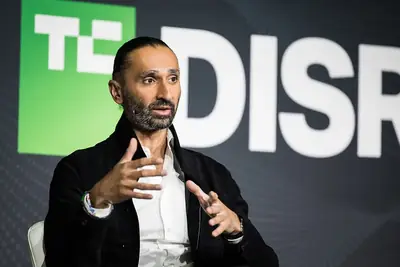
staymarkzuckerberg
Mark Zuckerberg Agrees to Stay in California Despite Billionaires’ Tax Ballot Measure
Meta’s board feared that its CEO’s departure could disrupt the company’s AI ambitions. A new stock agreement gives him financial incentives to stay put.
techcrunchfoundersummit
TechCrunch Founder Summit 2026: Everything you need to know
TechCrunch Founder Summit is a full-day gathering in Boston on November 4 where founders across all stages connect with top VCs and experienced entrepreneurs to gain tactical insights on building and scaling their companies.
consistentaccessbroad
Broad access through consistent standards
How OpenAI works with distribution partners to uphold consistent safeguards, support responsible access, and clarify expectations in our Usage Policies.
flintlargelyrecursive
Recursive launches Flint, a laptop coding model it says was largely built by AI
Startup Recursive has released Flint, a free, laptop-sized coding model built largely by its own AI research system, as an early test of AI that improves itself.
appleworldhuman-crafted
The new human-crafted Apple Music brand matters in an AI world
Opinion: In a world of AI slop, showing the human hands making things helps.
- Ars Technica AI The new human-crafted Apple Music brand matters in an AI world
holdoldhomepod
Hold onto your old HomePod – an upgrade is on the way
An upcoming update will bring new features to existing HomePods. Here’s what to know.
relationalkumooutperforms
NVIDIA Kumo Relational Outperforms Supervised Machine Learning on Relational Data, No Training Required
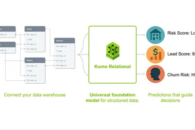
trumpepadismiss
Judge rejects Trump’s wild claim EPA can dismiss data center pollution lawsuits
Trump’s EPA can't unilaterally dismiss SpaceXAI pollution lawsuit, court rules.
armageddonancientholes
PHP Armageddon: OpenAI, Google’s Wiz find ancient holes, panicking the internet
This is the kind of security issue that was found and prevented by AI, but is also a high risk because of AI.
specializingvocabularyslms
How Specializing the Vocabulary of SLMs Can Cut Inference Cost by 77% in Real Applications
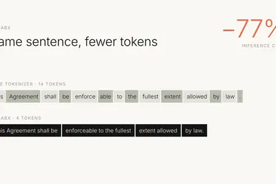
starlinkspacexcompute
SpaceX最大收入來源換人！AI營收首度超車Starlink，出租算力為何成新引擎？
SpaceX第三季營收145.75億美元、年增161%，AI部門首度超越Starlink成為最大收入來源，但營業利益率僅5.7%，獲利仍靠衛星網路。
blacksmithsequoiaseries
Blacksmith hits unicorn valuation after Sequoia leads Series C
Blacksmith, a platform that lets companies build and test AI code more effectively, just announced a $66 million Series C round led by Sequoia that values the company at $1 billion.
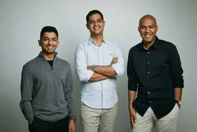
legalrethinkingin-house
How AT&T is rethinking in-house legal work with OpenAI
AT&T is working with OpenAI to make legal knowledge easier to access. Learn how its LegalEdge team is rethinking intake and scaling legal judgment.
chromewarnssuspicious
Chrome warns you about suspicious websites now – how to turn on Google’s new scam protection
Google’s browser will flash two types of warnings based on whether the site is deemed dangerous or just suspicious.
profilingtorchneuronsystem-level
Profiling TorchNeuron (Part 1): System-level profiling on AWS Trainium.
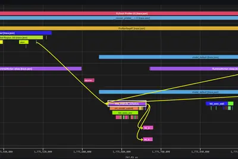
recursiveself-improvement.scary
This Startup Is All In on Recursive Self-Improvement. Its Latest Model Is Scary Good
Recursive makes the case that the benefits of using AI to build AI outweigh the risks.
agile2027gtc
英伟达联合思灵推出人形机器人参考平台 Agile ONE SN，计划 2027 年初上市
IT之家 10 月 21 日消息，英伟达当地时间 10 月 21 日在 GTC 柏林大会上宣布扩展 Isaac 开放机器人开发平台，新增人形机器人参考平台、运行框架、仿真资产和数据集，并更新机器人学习工具，覆盖从训练数据生成、仿真训练到实体机器人部署的开发流程。 硬件方面，英伟达联合思灵机器人（Agile Robots）发布了人形机器人参考平台 Agile ONE SN，计划于 2027 年初推出。 该平台预配置英伟达 Isaac GR00T，并搭载 Jetson Thor 计算平台，主要面向机器人研究与开发。通过整合仿真、训练和部署工具，Agile R
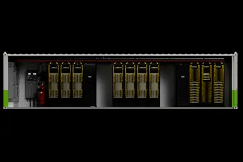
adschatgptadvertisers
ChatGPT Ads expands to 26 new countries as over 100,000 advertisers have used the platform
From local businesses to global brands, more advertisers can now reach people as they explore, compare and decide what to buy in ChatGPT.
nvidiaacrosseurope
NVIDIA Cloud Partners Scale Across Europe — Sovereign, Open and Built for Safe AI Agents
Demand from AI-natives is pulling the European AI cloud ecosystem forward faster than ever. Developers need compute closer to their data, open models they can customize and serve at scale, and full-stack infrastructure that is secure by design. NVIDIA Cloud Partners across Europe
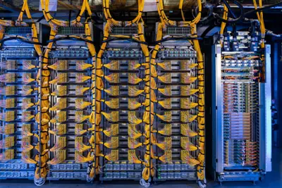
- NVIDIA Blog Google Cloud and NVIDIA Announce General Availability of NVIDIA Vera Rubin Infrastructure
- NVIDIA Blog NVIDIA Cloud Partners Scale Across Europe — Sovereign, Open and Built for Safe AI Agents
- NVIDIA Blog Europe’s Industrial Leaders Reinvent Engineering and Manufacturing With NVIDIA
- NVIDIA Blog NVIDIA cuDSS Now Generally Available to Accelerate Engineering and Scientific Simulations
- NVIDIA Blog NVIDIA Confidential Computing Expands, Enabling Frontier Model Builders to Securely Scale Across Global Infrastructure
- NVIDIA Blog NVIDIA Open Models Advance Europe’s Sovereign Intelligence Across Industries